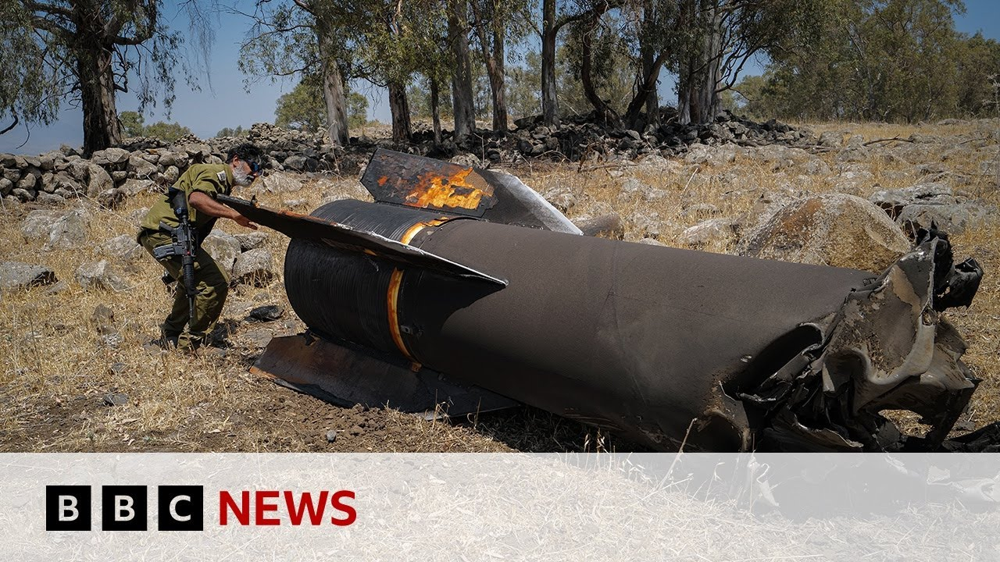

【BBC新闻：以色列和伊朗交换更多空袭】
Summary: Today once again demonstrated that the U.S. strike on Iran on Saturday night has not altered the pace of war between Iran and Israel. In the past 12 hours, we received two alerts for incoming Iranian ballistic missiles, forcing millions in Tel Aviv to take shelter. Israel reported seven direct hits across the country, including in the south. Footage aired earlier showed some form of electrical infrastructure being struck, causing power outages in the south. Jerusalem was also targeted, with loud explosions heard over the Old City. Meanwhile, Israel continued its heavy strikes on Iran, claiming to have hit the headquarters of the Islamic Revolutionary Guard Corps — a branch of Iran’s armed forces — as well as Evin Prison in Tehran, where political dissidents, journalists, and scholars are held. The Israeli military also targeted the countdown clock at Palestine Square in central Tehran, which symbolically displays the time remaining until Israel’s "destruction" in 2040.
摘要： 今天再次表明，美国周六晚对伊朗的袭击并未改变伊朗与以色列之间的战争节奏。过去12小时内，我们两次收到伊朗弹道导弹来袭的警报，迫使特拉维夫的数百万人躲进掩体。以色列称国内有七处直接命中，包括南部地区。节目早前播出的画面显示，某种电力基础设施被击中，导致南部停电。耶路撒冷也遭袭，老城上空传来巨大爆炸声。与此同时，以色列持续对伊朗发动猛烈打击，称已击中伊朗革命卫队总部——该国武装力量的分支——以及德黑兰的埃文监狱，那里关押着政治异见者、记者和学者。以军还袭击了德黑兰市中心巴勒斯坦广场的倒计时钟，该时钟显示距离2040年以色列"灭亡"的剩余时间，极具象征意义。

⏱️ Estimated Reading Time: 11 min
📚 六级生词 📚 雅思生词 📚 托福生词 📚 专八生词 📚 SAT生词 📚 考研生词 📚 GRE生词 📚 高考生词
Today was once again another sign that Saturday night strikes by the US in Iran has not changed the pace of this war between Iran and Israel.
今天再次表明，美国周六晚对伊朗的袭击并未改变伊朗与以色列之间的战争节奏。
In the last 12 hours, we had two alerts of incoming Iranian ballistic missiles here that sent us down to our bunkers here in Tel Aviv as many millions of Israelis also went down to the bunkers.
过去12小时内，我们两次收到伊朗弹道导弹来袭的警报，迫使特拉维夫的数百万人躲进掩体。
Israel says that there were seven direct hits uh in the country including in the south.
以色列称国内有七处直接命中，包括南部地区。
uh that footage that you showed earlier in the program uh suggesting that um a uh some kind of power uh infrastructure there was hit.
节目早前播出的画面显示，某种电力基础设施被击中。
There were power power outages in the south of the country.
导致南部停电。
Uh and also there were hits uh in Jerusalem as well with loud booms o over the old city.
耶路撒冷也遭袭，老城上空传来巨大爆炸声。
Uh meanwhile, Israel has continued to strike uh relentlessly in Iran.
与此同时，以色列持续对伊朗发动猛烈打击。
It says it has hit headquarters of the Iranian Revolutionary Guard.
称已击中伊朗革命卫队总部。
That is of course the branch of the Iranian armed forces and also as you said earlier the Evan prison in Thran, the most notorious prison there for Iranian political dissident.
——该国武装力量的分支——以及德黑兰的埃文监狱，那里关押着政治异见者。
Um and also a sign a prison where where journalists and academics are held.
记者和学者也被关押于此。
Uh they also hit the Israelis say a clock in central Tehran on what's called Palestine Square which counts down to the supposed destruction of Israel uh by the year 2040.
以军还袭击了德黑兰市中心巴勒斯坦广场的倒计时钟，该时钟显示距离2040年以色列"灭亡"的剩余时间。
So, a very symbolic strike there by the Israelis inside Iran.
此次袭击极具象征意义。
Well, a little earlier I spoke to is to Yakov Katz, who is a former editor-in chief of the Jerusalem Post, a longtime defense correspondent for that newspaper, and I asked him what sort of level of cooperation there had been between Israel and the US before those strikes in Iran on Saturday night.
稍早前，我采访了《耶路撒冷邮报》前主编雅科夫·卡茨，询问以美在周六空袭前的合作程度。
You have Israeli Air Force jets that are operating over Iran.
以军战机在伊朗上空行动。
You have lots of Israeli drones that are now continuously collecting intelligence and surveying and hunting down those rocket launchers and those surfaceto-air missile systems.
无人机持续收集情报并追踪火箭发射器和防空系统。
And all of this needs to happen at the same time that those B2 bombers were making their way.
这些行动必须与美军B2轰炸机任务同步协调。
So this had to be carefully orchestrated by General Currill of the Sencom of the Central Command who's the US general in charge of this region and the IDF uh general staff.
由美军中央司令部将军与以军总参谋部精心协调。
So all of that was definitely happening.
这些确实都在进行。
But you are to some extent right that what the Americans wanted from Israel was for those skies to be clear and for there not to be a threat against the B2 bombers that were going to making their way.
美军要求以方确保空域安全，避免B2面临威胁。
The B2 bombers, yes, have stealth capabilities, but because of their massive payload that they were carrying.
B2虽具隐身能力，但因携带重型炸弹。
Each of them had two of those GBU57 bunker busters.
每架配备两枚GBU57钻地弹。
They do fly slower than supersonic uh F-15s or F-16s.
其飞行速度低于超音速的F-15或F-16。
They don't have that capability.
不具备超音速能力。
and therefore if they were to come under uh surfaceto-air fire it could be a risky move for them.
若遭遇防空火力将非常危险。
So that was definitely something that was very important for the Americans and something that the Israelis put a big focus on in the runup to that operation.
这是美方高度重视、以方在行动前重点保障的事项。
Yakov Katz there former editor-inchief of the Jerusalem Post.
《耶路撒冷邮报》前主编雅科夫·卡茨。
Well, the Israelis have also uh hit Fordo, that uh nuclear site which was very much the focus of the American bombing on Saturday night.
以军还袭击了福尔多核设施——美方周六空袭的主要目标。
And really, Katrina, now a lot of the focus is on an amount of enriched uranium, some 400 kg of uh uranium, which is thought to be enriched to 60%.
焦点在于约400公斤60%浓缩铀。
And it is there are reports that potentially Iran moved that uranium out of Foraux before the strikes on Saturday night as a precaution perhaps knowing that the uh Americans would at some stage get into striking that site.
有报道称伊朗可能预先转移了这些铀材料。
And so the fear is what has happened to that uranium, where it is, what the Iranians could do with it, potentially spurred into action even greater action uh because of the strikes from Israel and the Americans into trying to make some kind of dirty bomb.
外界担忧伊朗可能借此制造脏弹。
And really, I suppose the success of the entire military operation in Iran might now hinge on that 400 kg of enriched uranium.
此次军事行动的整体成败或取决于此。
We will continue to bring you all the latest from here in the Middle East, Katrina.
我们将持续带来中东最新动态。
But for now, back to you.
现在交还给您。
Now, the Iranian capital has been hit by an intense new wave of Israeli strikes.
德黑兰遭遇以军新一轮密集空袭。
The targets included a paramilitary headquarters, a prison, and a university in Thran.
目标包括准军事总部、监狱和大学。
Video footage shows plumes of smoke rising above the Iranian capital, which is largely without power because of Israeli strikes on energy infrastructure.
视频显示城市上空浓烟滚滚，能源设施遭袭导致大面积停电。
Well, with me now is Bang Taiin from BBC Persia, part of the BBC World Service.
BBC波斯语频道记者邦·塔因加入讨论。
Thank you for being with us here.
感谢您的参与。
What do we know about what's happening inside Iran today?
伊朗境内现状如何？
Obviously, it's very difficult for us to get information from there.
显然信息获取极为困难。
The restrictions mean we can't be on the ground ourselves.
限制措施使我们无法实地报道。
Exactly. uh Iran doesn't let anyone from BBC Persian to report from Iran or the wider BBC apart from some occasions.
伊朗基本禁止BBC波斯语频道及其他BBC记者入境报道。
Um there are few things that everyone needs to consider.
有几点需要注意。
Firstly, some of these targets including for example the Ev prison are in the middle of residential areas in Thran.
埃文监狱等目标位于居民区。
So some of these attacks are also having um civilian casualties um and injuries.
已造成平民伤亡。
We have seen my colleagues have seen um pictures, videos or uh photos from uh friends or family members who live nearby.
同事收到附近居民提供的影像资料。
That kind of confirms that that actually there are civilian casualties and there are civilian um injuries as a results of these attacks.
证实袭击导致平民伤亡。
uh it it goes the same for universities even uh some of the military or par military bases.
大学及部分军事基地周边同样如此。
So it's uh we should remember that on on top of that you need to remember that unlike Israel when the attacks come there are no alarms.
伊朗未设置空袭警报系统。
So there is no way for ordinary people to find shelter even if there were any shelters.
民众无处避难。
So as a result of that uh we are seeing a lot of injuries and some casualties within Iran who are people who are not connected to the military establishment.
大量与军方无关的平民伤亡。
Even we have had reports of some children being killed in these attacks since they started.
甚至有儿童遇难报告。
Okay. And the internet blackout as well makes it even more difficult to get information about what you've described there.
互联网中断加剧信息获取难度。
Exactly. The internet has been shut down and then has some people have had patchy connections you know sometimes even for minutes.
网络完全中断，偶有零星连接。
Uh we have seen like messages going getting to the uh recipient in Iran after a couple of days in on some occasions.
信息延迟数日才能送达。
And again without having journalists from you know international media on the ground uh videos or pictures posted on the internet on on social media is one of the very few ways for us to get a get a glimpse inside the country and to see what is happening and then we have to hand it over to our colleagues in BBC verify or BBC Persian's digital team who have become experts in terms terms of geollocating these videos and com and authenticating them, making sure that they uh they are uh where they they um claimed to be and uh they were shot at the time they were claimed to be.
仅能依靠社交媒体零碎视频，需经专业团队核实地点和真实性。
And you know it's a journalistic effort in order to just confirm some very patchy details because as you can see the Iranian state is trying to control information.
伊朗严格管控信息。
There are edicts going to newspapers and other media almost every day telling them what they can and can can't cover.
每日向媒体发布报道禁令。
And because of that, having accurate up-to-date information about what is happening in Iran, what is happening in different cities and different parts of the country is quite a difficult task.
实时准确信息极难获取。
I know there are some restrictions imposed in Israel as well in terms of for example the media are not allowed to confirm the exact location of any uh missile hits but it's nothing compared to what we see in Iran.
以色列的媒体限制远不及伊朗。
Now we do get some information from Israel about what it's doing in Iran and again we can't you know verify that but it has said that it has hit the Aven prison.
以方自称击中埃文监狱。
talk to us a little bit about the significance of that or or why that might be a target.
请解读该目标的意义。
So Evan is the most notorious prison in Iran.
埃文监狱是伊朗最臭名昭著的监狱。
It uh it is the place that usually they hold political prisoners um from journalists to academics to intellectuals to all sorts of political activists who are imprisoned by uh the judiciary.
关押记者、学者、知识分子及各类政治活动家。
But it also holds you know u normal criminals you know murderers and rapists and other sorts of anyone who has done uh crime.
也关押普通罪犯。
What we know is it seems like two wings of the prison were damaged.
两处监区受损。
Not the wing where the political prisoners are held.
政治犯监区未受损。
They we we've been told by uh prisoners who have called people outside uh to say that it seems like the um the wall of u the women's wing was also damaged but the judiciary claims that the situation is under Throw.
据囚犯致电外界称女性监区围墙受损，但司法部门声称局势可控。